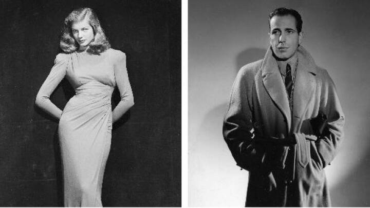

Ca. 1900

Kropsidealet i 1900-tallet var præget af en meget feminin form, hvor kvinder helst skulle have lidt fylde på kroppen. Alligevel var det især den eftertragtede timeglasfigur, som mange ønskede at opnå. For at få en smal talje snørede kvinder sig selv og hinanden ind i korsetter, som kunne stramme taljen ind til helt ned omkring 47 centimeter.
1920

1940

1950

1960

1970

1980

1990

2000

2010